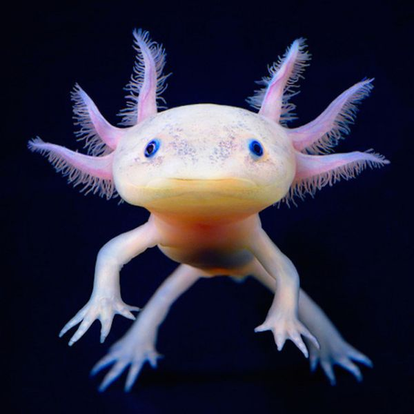

Not only do they have a cool name with an unusual spelling, but also Axolotls have the unique quality among amphibians of reaching adulthood without undergoing metamorphosis. Also known as the "Mexican walking fish," " the Axolotl has four legs and beautiful strange treelike gills.
Sadly, Axolotls are listed by more than one organization as endangered species. In Mexico City, there are some rehabilitation efforts including the building of "Axolotl shelters." They are also used extensively in scientific research due to their ability to regenerate limbs.